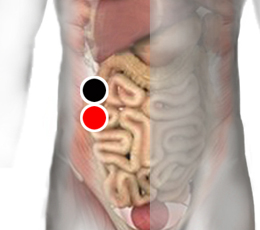

Listeria monocytógenes
Pares
colon ascendente - colon ascendente
hígado - píloro
arco cigomático- parietal

Generalidades:
Síntomas gastrointestinales: dolor abdominal, distensión, diarrea, gastritis, colitis, náusea, fiebre, cefalea.
Transmisión:
Por alimentos contaminados, en especial carnes, alimentos procesados que requieran de refrigeración (la bacteria prolifera arriba de los 4° C.). Puede ser contaminación por materia fecal.
Recomendaciones: comprar carnes y alimentos procesados de excelente calidad, lavar y desinfectar frutas y verduras, evitar preparar alimentos si se tienen los síntomas. Seguir rigurosamente medidas higiénicas.